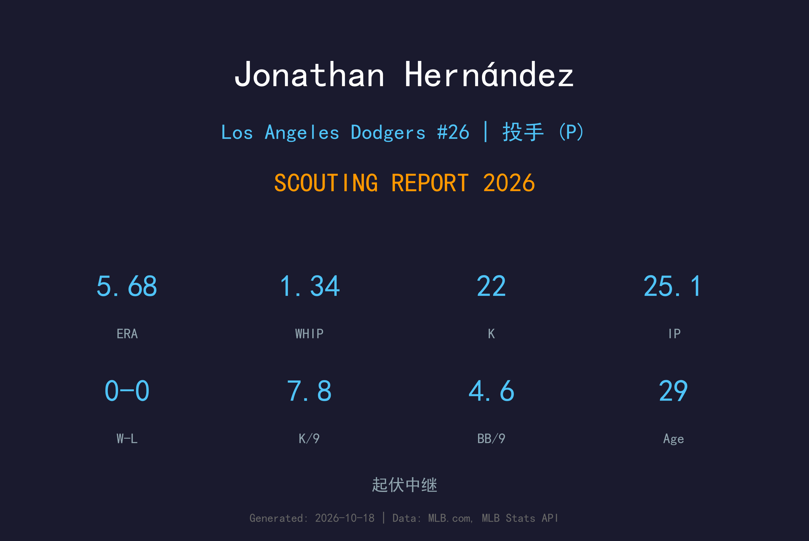
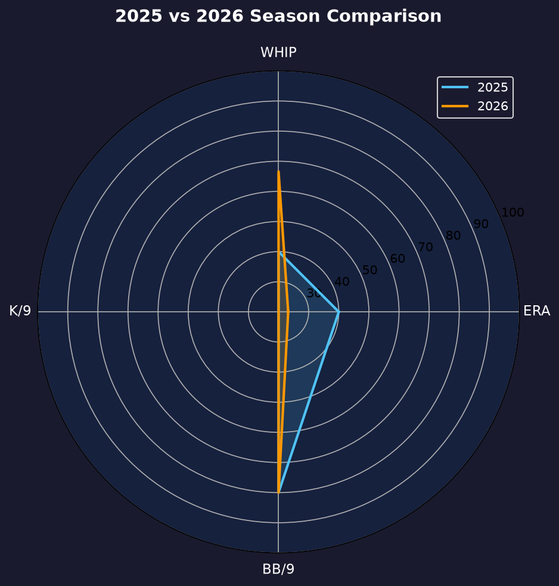
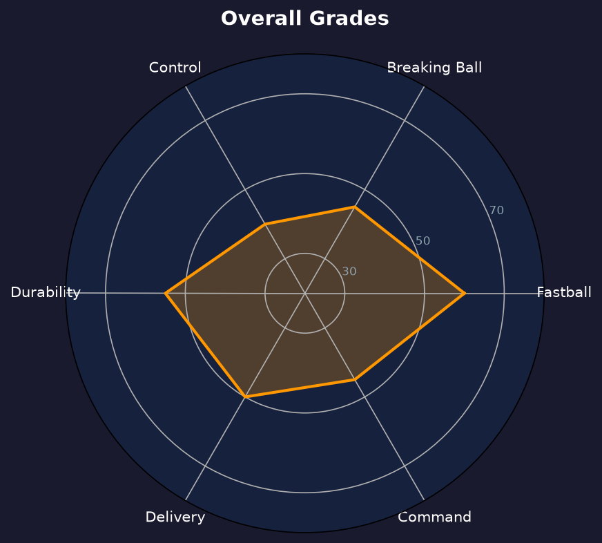

Los Angeles Dodgers | 后援投手 | 右投 / 右打 | 长中继工具人

Jonathan Hernández 是一名以速球见长的大联盟 veteran 后援，生涯 143 场 4.49 ERA。他的 fastball 可冲到 98-100 mph，配上滑球与变速球，曾在 2020-2022 年间担任游骑兵高杠杆中继。
2026 年 5 月 18 日被道奇从自由市场捡回后，他整季扮演长中继（long reliever）工具人：16 场出赛吃掉 25.1 局（场均约 1.6 局），5.68 ERA、1.34 WHIP、22 三振 13 保送。以长中继"吃局数、保牛棚"的标准看，局数任务完成，但自责分率偏高，每一分都不便宜。
他在 6 月 30 日、8 月 10 日、8 月 19 日三度被 DFA，最终在 3A Oklahoma City 打完赛季，10 月 21 日加盟多米尼加冬季联盟 Águilas Cibaeñas 保持出赛。30 岁的他正站在大联盟名单边缘。
2013 年以国际自由球员身份签约游骑兵，2019 年 8 月 21 日完成大联盟首秀，当年 9 场 4.32 ERA。
缩水的 2020 赛季 27 场、2.90 ERA、1.03 WHIP，速球均速冲上 97 mph，成为游骑兵牛棚最亮眼的年轻火力。
2021 年 4 月接受 Tommy John 手术整季报销，2022 年强势复出：29 场 2.97 ERA、1.42 WHIP、4 次救援成功，重新成为游骑兵牛棚倚重的高杠杆中继。
2023-2024 年在游骑兵 ERA 升至 5.40 / 5.05，2024 季中被交易至水手 3 场后结束该年；2026 年在道奇整季担任长中继工具人，三度 DFA，季后打冬季联盟延续生涯。
角色说明：16 场吃掉 25.1 局，场均约 1.6 局——典型的 long reliever usage。评价标准应放在"能否稳定吃局数、避免崩盘中继"，而非 setup 手的 ERA 门槛。

| 赛季 | 球队 | G | IP | ERA | WHIP | K | BB |
|---|---|---|---|---|---|---|---|
| 2024 | TEX / SEA | 29 | 43.1 | 5.40 | 1.59 | 39 | 28 |
| 2026 | Los Angeles Dodgers | 16 | 25.1 | 5.68 | 1.34 | 22 | 13 |
2025 年未登上大联盟（TJ 手术后的漫长复健与状态调整）。2024 到 2026 的共同点：ERA 都在 5.4-5.7 区间徘徊，但 2026 年 WHIP 从 1.59 降至 1.34，控球品质其实略有回升—— ERA 偏高部分来自长中继 inheriting 失分的结构性因素。生涯 143 场 4.49 ERA / 1.43 WHIP 是他的真实水位。
Hernández 的四缝线速球 96-99 mph、尾劲十足，是他从 2019 年立足大联盟至今的根基。滑球 85-88 mph 在好球带边缘有横向位移，但落点控制起伏大；变速球对左打者效果有限。他的三振率生涯 8.7 K/9，但保送率 4.7 BB/9——三振与保送双高的"野火型"后援，每局都在走钢索。
16 场 25.1 局意味着他经常在比分落后或领先两位数时上场，一次登板吃 2-3 局。这类投手的 ERA 天然比 setup 手难看（ often inheriting runners、长时间冷却后再上场），但价值在于让 Vesia、Scott 等主力中继得到完整休息。2026 年他完成了这个角色，但 5.68 ERA 说明道奇更想要一个"能关门的长中继"，而不是"能完事的长中继"。
6/30、8/10、8/19 三度被 DFA，道奇每次都选择 outright 而非释放，说明球团认为他的速球仍有价值；但反复进出名单也意味着他是第一个被牺牲的名字。30 岁 + TJ 手术史 + 近两年 ERA 5+，他的市场定位已是"小联盟合约 + 春训邀请"的救火型投手。

速球为矛、控球为盾、名单边缘的长中继
B- 级 / 名单边缘
Hernández 的 2027 年将从多米尼加冬季联盟开始 audition。如果能重现 2020-2022 的压制力，他仍有机会拿到大联盟春训邀请；若 ERA 继续停在 5.5 以上，等待他的将是小联盟合约与 DFA 循环。
2026：5/18 自由球员签约道奇；16 场长中继 5.68 ERA；6/30、8/10、8/19 三度 DFA，8 月起长住 3A Oklahoma City；10/21 加盟 Águilas Cibaeñas 打冬季联盟
2027：争取春训邀请，目标回到大联盟担任 low-leverage 长中继
2028+：若速球掉速或控球无改善，将流向海外或 independent league
Jonathan Hernández 1996 年 7 月 6 日出生于美国田纳西州孟菲斯，父母来自多米尼加。2013 年，16 岁的他以国际自由球员身份与德州游骑兵签约，从多米尼加夏季联盟一路爬升，2019 年 8 月 21 日登上大联盟。
他的生涯曲线大起大落：2020 年缩水赛季以 2.90 ERA 成为游骑兵牛棚新星；2021 年 4 月接受 Tommy John 手术整季报销；2022 年复出后交出 2.97 ERA、4 次救援成功，仿佛重回轨道。但 2023 年起他的 ERA 逐年攀升（5.40、5.05），2024 年季中被送到水手后也未能止跌。
2026 年春天，费城人给了他一张非名单邀请，但 5 月 17 日在 3A 被释出；隔天，道奇签下了这位老熟人。他在道奇的半年是纯粹的"牛棚耗材"角色：比分拉开时上场、一次吃两局、随时可能出现在 DFA 名单上。他三度经历这个过程，又三度接受 outright 留下——对一名 30 岁的 veteran 来说，这不是体面的活法，但这是他热爱的方式。10 月 21 日，他回到祖辈的土地上，加盟多米尼加冬季联盟 Águilas Cibaeñas，准备再来一年。